No solo eliminamos plagas, te damos el control. Accede a nuestra plataforma exclusiva para ver reportes detallados y resultados al instante.
Acceder al Portal RupipestMONITOREO EN TIEMPO REAL CON RUPIPEST
El control de plagas evolucionó
Olvíƒ톀™í€šdate de las dudas. Con XpertPlagas, elimina cualquier amenaza sanitaria y monitorea el estado de tu hogar o negocio directamente desde tu celular.
Agenda tu Inspecciíƒ톀™í€š³n Gratuita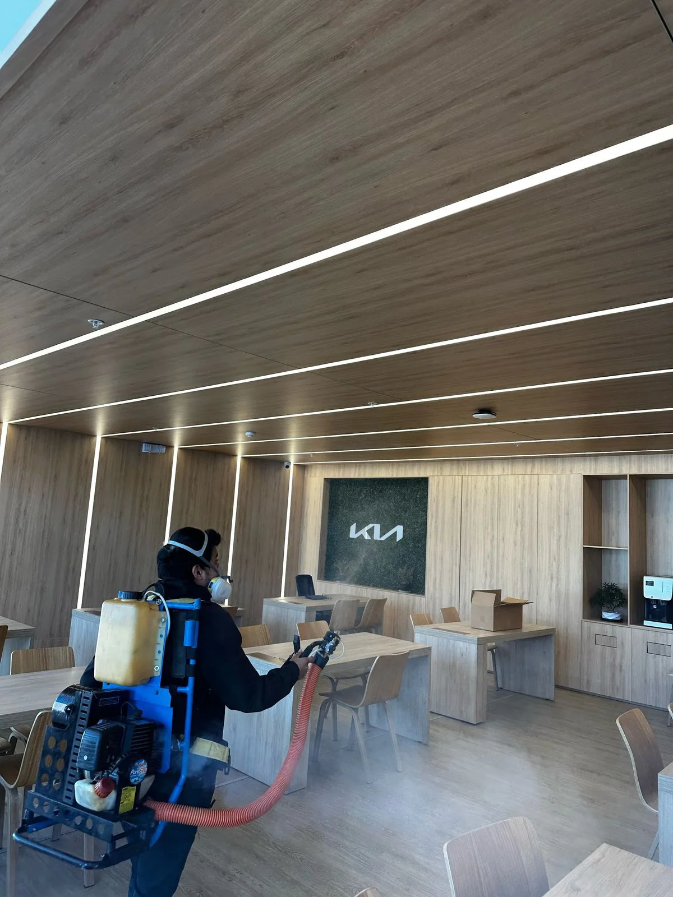
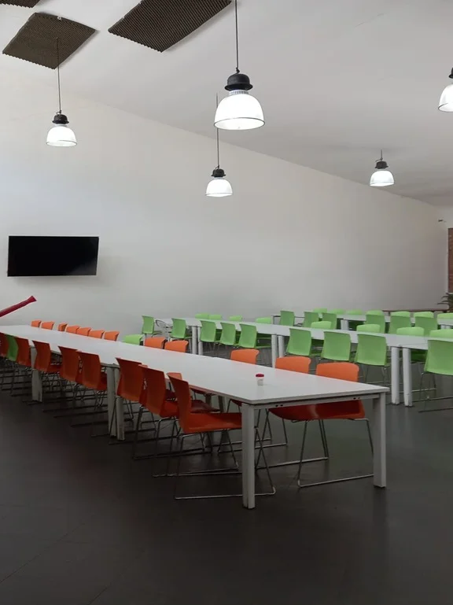
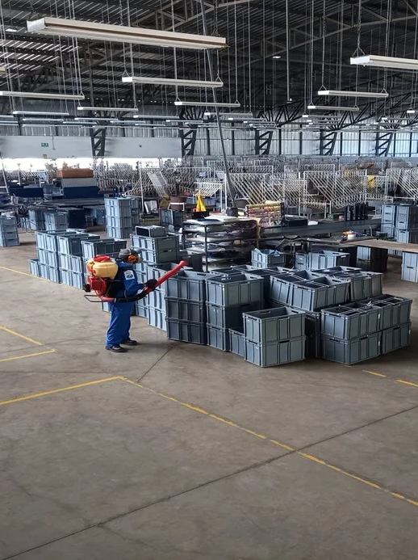
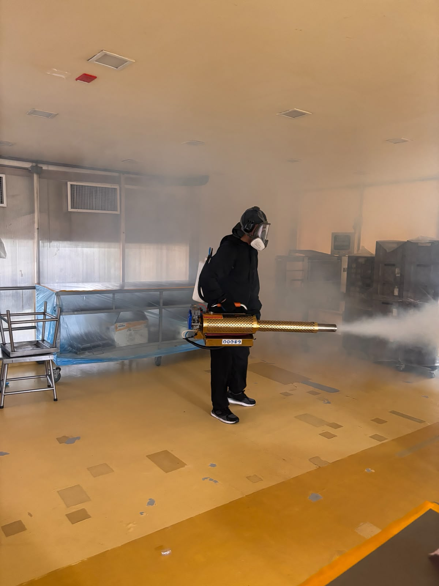
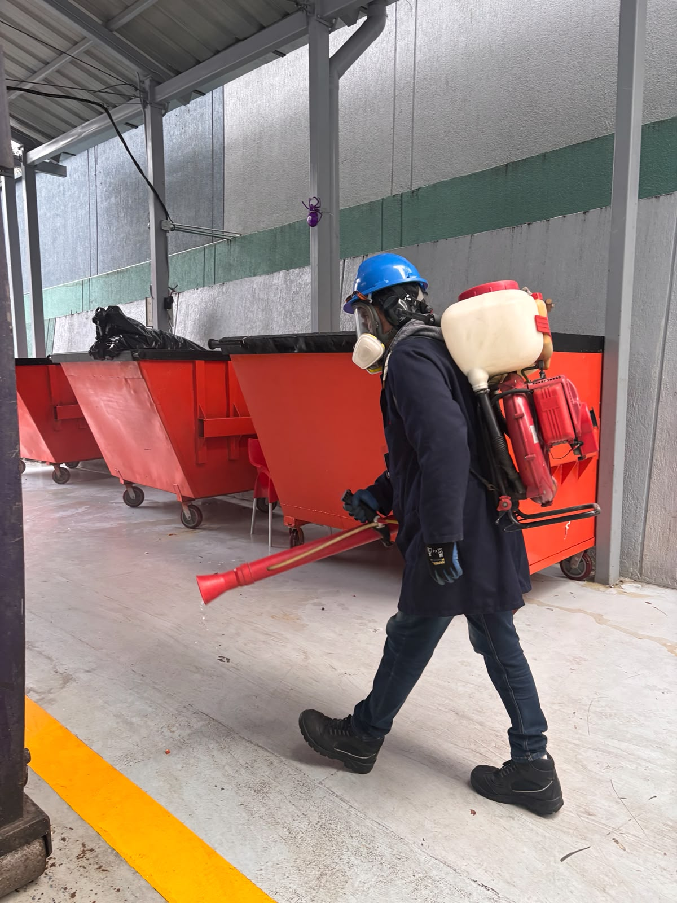


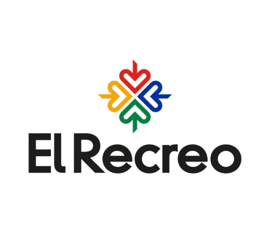
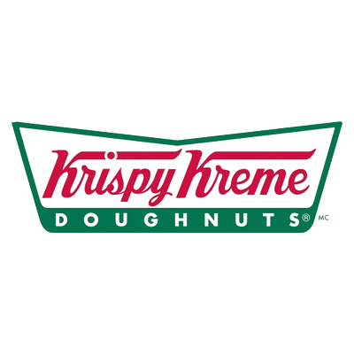
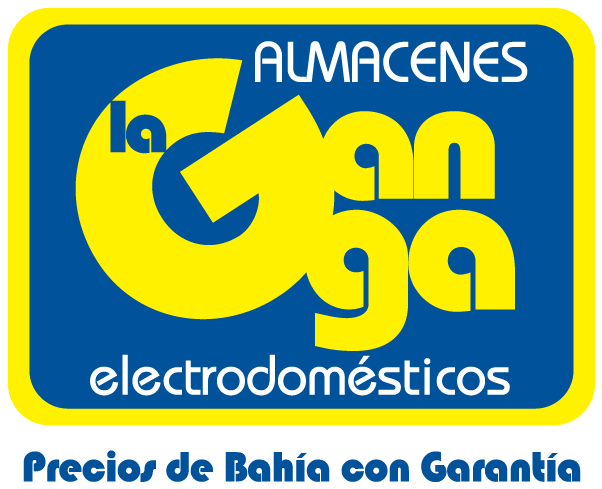
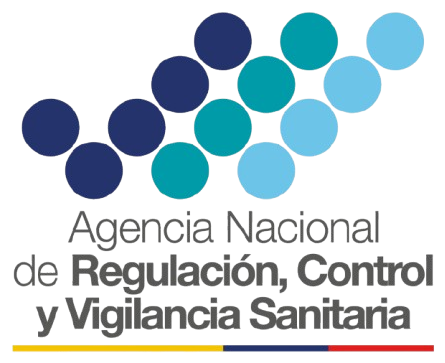
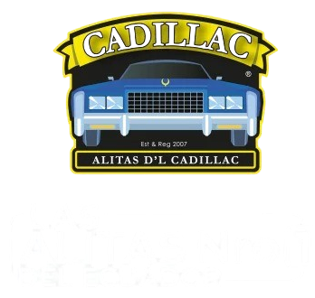
Transparencia Total:
La íƒ톀™í€šºnica empresa con monitoreo 24/7.

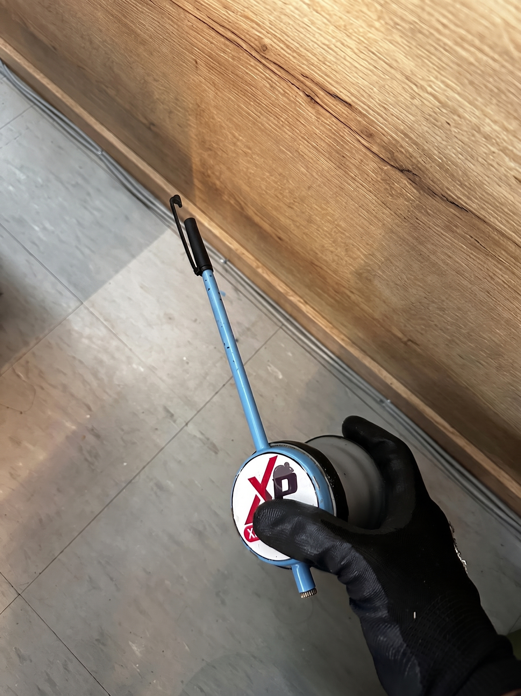
MINISTERIO DEL AMBIENTE
ARCSA
ISO 9001
AGROCALIDAD
Soluciones Integrales para Residencias, Comercios e Industrias
Desde fumigaciónte.
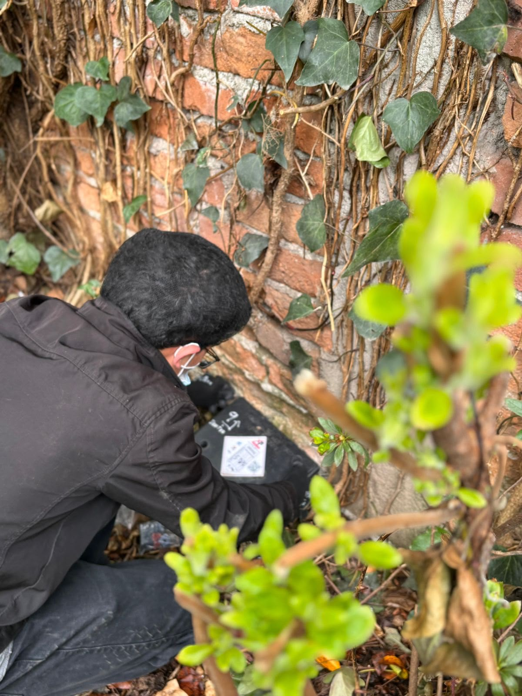
fumigaciónal
Control de una amplia variedad de plagas voladoras y rastreras utilizando productos seguros y tíƒ톀™í€š©cnicas avanzadas para asegurar ambientes libres de insectos.
Desratizaciíƒ톀™í€š³n y Control
Implementaciíƒ톀™í€š³n de estrategias integrales para la eliminaciíƒ톀™í€š³n de roedores, previniendo daíƒ톀™í€š±os a la propiedad y riesgos para la salud con un enfoque a largo plazo.
Desinfecciíƒ톀™í€š³n de Ambientes
Servicios de desinfecciíƒ톀™í€š³n profunda para eliminar bacterias, virus y otros microorganismos, creando entornos míƒ톀™¡s higiíƒ톀™í€š©nicos y seguros.
Control de Aves
Soluciones íƒ톀™í€š©ticas y efectivas para el control de poblaciones de aves, previniendo daíƒ톀™í€š±os estructurales y riesgos sanitarios en edificios.
Nuestro Programa de Manejo Integral de Plagas
Efectividad y Prevenciíƒ톀™í€š³n
No solo eliminamos la plaga actual; implementamos estrategias a medida para prevenir futuros vectores desde la raíƒ톀™í€šz, asegurando la salubridad de su espacio.
Monitoreo en Tiempo Real
A travíƒ톀™í€š©s de nuestro exclusivo Sistema Rupipest, obtenga reportes instantíƒ톀™¡neos, trazabilidad por cíƒ톀™í€š³digos QR y control total de su negocio desde su celular.
Atenciíƒ톀™í€š³n y Garantía Total
Ofrápido, discreto y personalizado. Profesionales altamente capacitados trabajando con productos seguros para garantizar resultados definitivos.
Calidad técnica respaldada por expertos
Con seis aíƒ톀™í€š±os de experiencia y una síƒ톀™í€š³lida trayectoria, el Ingeniero Chiluisa Rueda Ian Joel lidera XpertPlagas. Aportando su conocimiento especializado, cumplimos rigurosamente con normativas de ARCSA, el Ministerio del Ambiente y el Ministerio del Trabajo para ofrecer soluciones eficientes que garantizan la salud de nuestros clientes y el cuidado del medio ambiente.

Ing. Joel Chiluisa
CEO XpertPlagas

Encuéntranos
Matriz: Quito
Cobertura nacional: Quito, Guayaquil y Cuenca
Preguntas Frecuentes
Todo lo que necesitas saber antes de contratar un servicio de control de plagas.
Depende del tipo de espacio y la plaga, pero como referencia general recomendamos un mantenimiento preventivo cada 2 a 3 meses en negocios (restaurantes, bodegas, industrias de alimentos) y cada 4 a 6 meses en hogares. Un servicio puntual resuelve un problema activo, pero solo un plan preventivo evita que la plaga vuelva.
Sí. Trabajamos con productos de uso profesional registrados y aplicados según protocolos técnicos de bioseguridad, respetando los tiempos de reingreso indicados por el fabricante. Antes de cada servicio te explicamos exactamente cuánto tiempo debe permanecer desocupado el espacio.
Antes: despejar superficies, guardar alimentos expuestos y retirar mascotas del área. Después: ventilar el espacio durante el tiempo que te indique el técnico antes de reingresar, y evitar limpiar las zonas tratadas los primeros días para no reducir el efecto del producto. Te dejamos estas indicaciones por escrito en cada visita.
Es nuestro sistema propio de monitoreo en tiempo real: en vez de solo fumigar y esperar a que el problema regrese, instalamos puntos de control que nos permiten revisar el estado de tu espacio de forma remota y anticiparnos a una nueva infestación, no solo reaccionar cuando ya es visible.
Sí, contamos con atención a emergencias de manera inmediata. Si detectas una plaga activa que no puede esperar al siguiente mantenimiento programado, nos escribes por WhatsApp y coordinamos la visita lo antes posible.
Tenemos cobertura nacional con matriz en Quito y atención en Guayaquil y Cuenca, tanto para hogares como para empresas, industrias y entidades públicas.
Sí, todos nuestros planes incluyen Garantía Total: si la plaga persiste dentro del período pactado, la reintervención corre por nuestra cuenta, sin costos ocultos.
¿Tienes otra pregunta? Escríbenos por WhatsApp